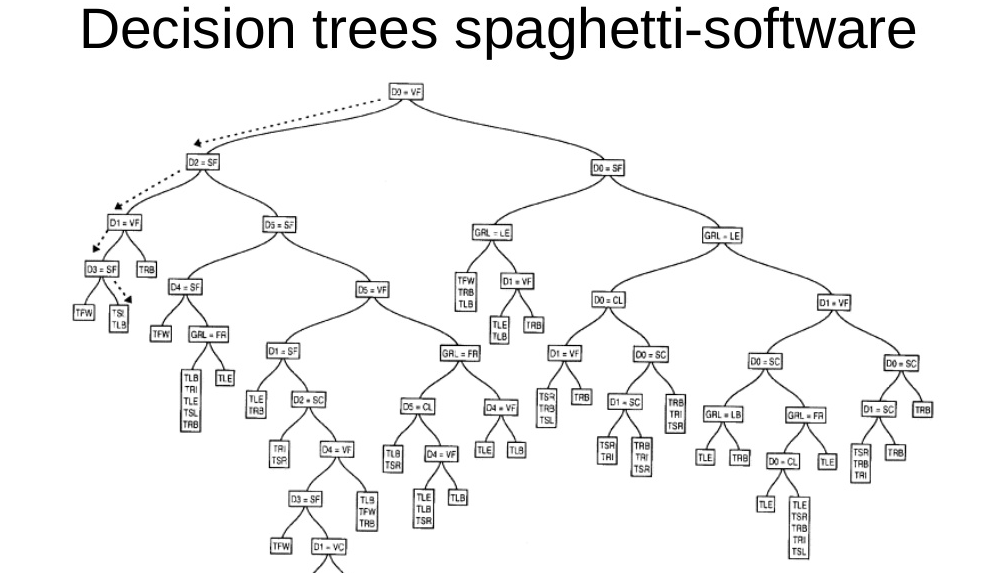

Decoupling business logic with dialog flow scripting

Hi Matthias!
I read with pleasure your article. Yes, me too I’m a telegram bot experimenter (www.github.com/solyaris/BOTServer).
Even if coding a simple “commands” bot, by example for simple (ecommerce) task is pretty easy and a usual ecommerce workflow could be “hard-coded” writing logic in a usual programming language (I call this command-oriented bots: generation I bots), things become more complex when the chatbot have to face a more natural (conversational) dialog.
In these generation II bots, the dialog flow have to possibly decoupled from the backend. I pointed out this also here:
There are some interesting dialog flow script language experiments, see:
I’m now very interested on a possible new open-source dialog script language syntax “standard”, to share dialog templates (aka knowledge). At the moment my preferred language in this realm is ChatScript.
What’s your opinion about this question ?
thanks
giorgio
Originally published on Medium.